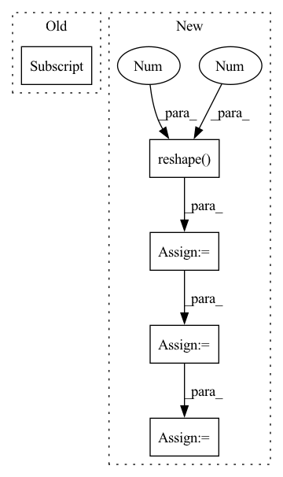

Pattern ID :5115

Before Change
if padding_mode == "replicate":
// replication padding has some strange constraints...
assert len(tensor.shape) - dim <= 2
padding = padding[:(len(tensor.shape) - 2) * 2]
tensor_ = F.pad(tensor, padding, padding_mode, padding_value)
// create gaussian kernel from grid using current sigma
After Change
assert tensor.shape[-1] == source_shape[dim]
// we need reshape instead of view for batches like B x C x H x W
tensor = tensor.reshape(-1, 1, source_shape[dim])
padding = (math.ceil((kernel_size_int - 1) / 2), math.ceil((kernel_size_int - 1) / 2))
tensor_ = F.pad(tensor, padding, padding_mode, padding_value)
// create gaussian kernel from grid using current sigma
kernel = torch.exp(-0.5 * (grid / sigma) ** 2)
kernel = kernel / kernel.sum()
// convolve input with gaussian kernel
tensor_ = F.conv1d(tensor_, kernel)
tensor_ = tensor_.view(dim_last_shape)
tensor_ = torch.movedim(tensor_, len(source_shape)-1, dim)
assert tensor_.shape == source_shape
In pattern: SUPERPATTERN
Frequency: 3
Non-data size: 5
Instances
Fragment ID: 17994513
Project Name: matthias-k/deepgaze
Commit Name: a2f6037f9ae20086ff19775583ed036167449172
Time: 2022-06-20
Author: matthias.kuemmerer@bethgelab.org
File Name: deepgaze_pytorch/layers.py
M Class Name: AnonimousClass
N Class Name: AnonimousClass
M Method Name: gaussian_filter_1d(7)
N Method Name: gaussian_filter_1d(7)
M Parent Class:
N Parent Class:
M File Name: deepgaze_pytorch/layers.py
N File Name: deepgaze_pytorch/layers.py
M Start Line: 130
M End Line: 160
N Start Line: 128
N End Line: 164
'>
Before Change
mask_positions_after_reshaped.append(batch * seq_len + pos)
logits = logits.reshape(batch_size * seq_len, -1) // (batch_size * seq_len, vocab_size)
mask_logits = logits[mask_positions_after_reshaped] // (batch * label_num, vocab_size)
mask_labels = mask_labels.reshape(-1, 1).squeeze() // (batch * label_num)
loss = cross_entropy_criterion(mask_logits, mask_labels)
After Change
single_mask_logits = single_mask_logits.repeat(len(single_sub_mask_labels), 1, 1) // (sub_label_num, mask_label_num, vocab_size)
single_mask_logits = single_mask_logits.reshape(-1, vocab_size) // (sub_label_num * mask_label_num, vocab_size)
single_sub_mask_labels = torch.LongTensor(single_sub_mask_labels).to(device) // (sub_label_num, mask_label_num)
single_sub_mask_labels = single_sub_mask_labels.reshape(-1, 1).squeeze() // (sub_label_num * mask_label_num)
cur_loss = cross_entropy_criterion(single_mask_logits, single_sub_mask_labels)
cur_loss = cur_loss / len(single_sub_mask_labels)
if not loss:
loss = cur_loss
else:
loss += cur_loss
loss = loss / batch_size // (1,)
'>
Fragment ID: 17994007
Project Name: harderthenharder/transformers_tasks
Commit Name: bf825bb22c43795f1e3a08cf8969ddc613051e76
Time: 2022-11-30
Author: pankeyu@pankeyus-MacBook-Pro.local
File Name: prompt_tasks/p-tuning/utils.py
M Class Name: AnonimousClass
N Class Name: AnonimousClass
M Method Name: mlm_loss(6)
N Method Name: mlm_loss(6)
M Parent Class:
N Parent Class:
M File Name: prompt_tasks/p-tuning/utils.py
N File Name: prompt_tasks/p-tuning/utils.py
M Start Line: 204
M End Line: 212
N Start Line: 190
N End Line: 203
'>
Before Change
loc_len = batch.get_origin_len("current_loc")
for i in range(score.shape[0]):
if i == 0:
true_scores = score[i][loc_len[i] - 1].reshape(1, -1)
else:
true_scores = torch.cat(
(true_scores, score[i][loc_len[i] - 1].reshape(1, -1)), 0)
After Change
// out = out.permute(1, 0, 2)
origin_len = batch.get_origin_len("current_loc")
final_out_index = torch.tensor(origin_len) - 1
final_out_index = final_out_index.reshape(final_out_index.shape[0], 1, -1)
final_out_index = final_out_index.repeat(1, 1, self.hidden_size).to(self.device)
out = torch.gather(out, 1, final_out_index).squeeze(1) // batch_size * hidden_size
out = F.selu(out)
out = self.dropout(out)
y = self.fc(out)
score = F.log_softmax(y, dim=1) // calculate loss by NLLoss
return score
def predict(self, batch):
'>
Fragment ID: 17994519
Project Name: libcity/bigscity-libcity
Commit Name: ec61c9cd984d1c86ee715380ed3b65b4222c8d1f
Time: 2021-05-06
Author: 33283819+WenMellors@users.noreply.github.com
File Name: trafficdl/model/trajectory_loc_prediction/RNN.py
M Class Name: RNN
N Class Name: RNN
M Method Name: forward(2)
N Method Name: forward(2)
M Parent Class: AbstractModel
N Parent Class: AbstractModel
M File Name: trafficdl/model/trajectory_loc_prediction/RNN.py
N File Name: trafficdl/model/trajectory_loc_prediction/RNN.py
M Start Line: 87
M End Line: 97
N Start Line: 84
N End Line: 94